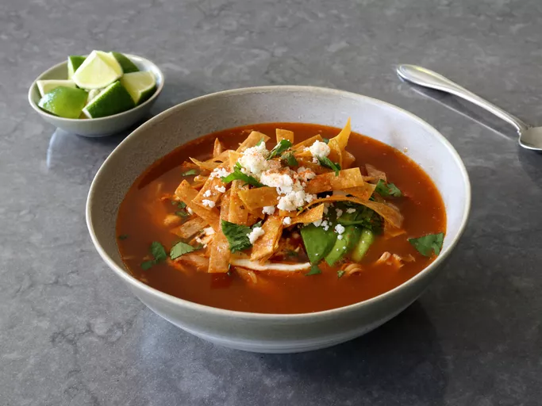

Chicken Tortilla Soup

Home
Chef John’s Chicken Tortilla Soup
My chicken tortilla soup is not a fast recipe, but it is one of the greatest chicken soup experiences known to man. The smoky, spicy, slowly simmered tomato chicken broth is made from scratch, and the soup is topped with all your favorite garnishes: toasted tortilla strips, sour cream, avocado, cilantro, lime, and crumbled Mexican cheese.
Ingredients
- 1 (4 1/2 pound) whole chicken
- 3 white onions, halved, divided
- 1 bunch cilantro, rinsed well
- 2 bay leaves
- 1/2 teaspoon whole black peppercorns
- 1 teaspoon Mexican oregano
- 2 dried chili pepper pods, seeded (optional)
- 3 quarts water
Tortilla Strips:
- 12 corn tortillas
- 1/4 cup vegetable oil
- 1/2 teaspoon kosher salt
Charred Vegetable Salsa:
- 3 large tomatoes
- 1 sweet red pepper, halved and seeded
- 1 large or 2 small jalapeno peppers, halved and seeded
- 6 garlic cloves, peeled
- 1 whole canned chipotle pepper in adobo sauce (optional)
-
To Finish:
- 1 teaspoon ground cumin
- 1 lime, juiced
Garnishes:
- sour cream
- sliced avocado
- chopped cilantro
- shredded or crumbled Mexican cheese, such as cotija
- lime wedges
- sprinkle of cayenne pepper